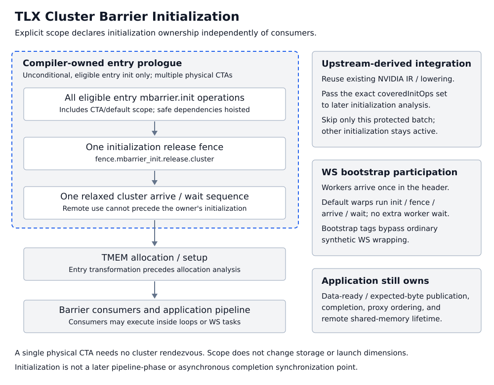

Barriers
For the concepts behind these calls — asynchronous barrier semantics, the mbarrier phase model, named vs memory barriers, and producer-consumer patterns — see Barrier Support in TLX.
barriers = tlx.alloc_barriers(num_barriers, arrive_count=1, scope="cta") [sm90+]Allocates buffer in shared memory and initialize mbarriers with arrive_counts.
Input:
num_barriers: The number of barriers to allocate.arrive_count: The number of threads that need to arrive at the barrier before it can be released.scope: Compile-time initialization scope, "cta" or "cluster".Use scope="cluster" for barriers that require cross-CTA initialization visibility. With multiple physical CTAs, if any eligible kernel-entry barrier has cluster scope, the compiler batches all eligible entry barrier initializations, including CTA-scoped barriers, before TMEM allocation. Immediately after the last initialization it inserts one initialization fence followed by a relaxed cluster arrive and cluster wait, independently of which operations consume the barriers. This works with either logical multi-CTA distribution or a physical multi-CTA cluster. A single physical CTA needs no cluster rendezvous; scope never changes the launch dimensions or barrier layout.
Allocate cluster-scoped barriers unconditionally in the kernel prologue, before their use. Consumers may be inside loops or warp-specialized tasks, but initializing these barriers inside branches, loops, or tasks is not supported. The default preserves existing behavior, including legacy compiler synchronization for recognized paired-MMA and other consumers.
# Requires a two-CTA launch; scope does not create the cluster.
bars = tlx.alloc_barriers(num_barriers=1, scope="cluster")
# Initialization is ready for cross-CTA use; no manual init fence is needed.
if tlx.cluster_cta_rank() == 0:
tlx.barrier_arrive(bar=bars[0], remote_cta_rank=1)Initialization scope does not change arrive_count, register expected transaction bytes, or wait for asynchronous completion. Keep data-ready handshakes, proxy fences, and DSM lifetime synchronization required by the algorithm. The automatic initialization rendezvous does not publish later generic stores or synchronize later pipeline phases.
tlx.barrier_wait(bar, phase) [sm90+]Wait until the mbarrier phase completes
tlx.barrier_arrive(bar, arrive_count=1, remote_cta_rank=None) [sm90+]Perform the arrive operation on an mbarrier. If remote_cta_rank is provided, signals the barrier in the specified remote CTA's shared memory (useful for multi-CTA synchronization). On AMD this requires arrive_count == 1.
tlx.named_barrier_wait(bar_id, num_threads) [sm90+]Wait until num_threads total threads have reached the specified named mbarrier phase.
tlx.named_barrier_arrive(bar_id, num_threads) [sm90+]Signal arrival at a named mbarrier.
For both APIs, num_threads is the total number of threads required to flip the barrier phase: num_waiting_threads + num_arriving_threads. Wait and Arrive calls for the same barrier phase must use the same value.
tlx.barrier_expect_bytes(bar, bytes) [sm90+]Signal a barrier of an expected number of bytes to be copied.
Cluster initialization ownership
scope="cluster" declares an initialization requirement, not a new barrier storage type or a user-facing region API. The compiler constructs a designated kernel-entry prologue segment. With multiple physical CTAs, one cluster-scoped entry barrier triggers batching of all eligible entry initializations, including CTA/default-scope barriers. A single physical CTA needs no cluster rendezvous.

The initializing thread publishes mbarrier.init with an initialization release fence. The relaxed cluster arrive/wait prevents remote use before the owner is ready. The entire batch precedes TMEM setup, and hoisting precedes allocation analysis so shared-memory liveness sees the actual schedule. Initialization must be unconditional at entry; branch, loop, task, reinitialization, and later-phase cluster initialization are unsupported. Consumers may still be inside loops or WS tasks.
| Synchronization requirement | Owner | Guarantee or required action |
|---|---|---|
| Entry mbarrier initialization visibility | Compiler | scope="cluster" supplies the initialization fence and cluster rendezvous for multiple physical CTAs. |
| Internal synchronization of compiler-managed cross-CTA operations and scratch dependencies | Compiler | Supported lowering and dependency analysis arrange internal synchronization; this is not a guarantee for arbitrary user-written remote accesses. |
| Expected-byte and application data-ready publication | User | Establish the required ordering before a remote sender can start or complete its transaction. |
| Asynchronous completion and pipeline phases | User | Arrange the arrive/expect/wait protocol. cluster_barrier() alone is not an asynchronous completion wait. |
| Remote shared-memory reuse or owner exit | User | Confirm remote use has completed before reuse or exit, using a cluster rendezvous or a completion/acknowledgment protocol as needed. |
The compiler reuses existing Triton NVIDIA fence/arrive/wait IR and lowering; it does not call the Gluon Python API. TLX still defines the entry bootstrap ownership and ordering. Its exact coveredInitOps set tells the later cross-CTA initialization analysis to skip only that already-protected batch; other initialization and runtime dependency analysis remain active.
For WS bootstrap, worker warps arrive once in the header while default warps execute initialization, fence, arrive, and wait. Only the designated bootstrap operations bypass ordinary synthetic-WS wrapping, avoiding duplicate worker arrivals. Later synchronization keeps its normal lowering. This participation mechanism does not infer application data-ready or pipeline-phase requirements.
The default CTA scope retains legacy consumer-based synchronization. Do not remove required application handshakes merely because initialization now has cluster scope. For more background, see Barrier Support in TLX.
Scheduling barriers
tlx.amd_sched_barrier(mask=0) [amd]Prevents selected AMD machine-instruction classes from crossing a source boundary. It is a scheduling marker, not a workgroup barrier or memory fence.
Memory fences
tlx.fence(scope) [sm90+] issues a memory fence. The scope argument is required:| Scope | PTX | Description |
|---|---|---|
"gpu" | fence.acq_rel.gpu | Device-scope fence. Orders prior global/shared memory writes to be visible to all GPU threads. |
"sys" | fence.acq_rel.sys | System-scope fence. Like "gpu" but also visible to the host CPU. |
"async_shared" | fence.proxy.async.shared::cta | CTA-scope proxy fence for async shared memory. Required between local_store and a subsequent TMA store (async_descriptor_store) to the same shared memory. |
"async_shared_cluster" | fence.proxy.async.shared::cluster | Cluster-scope proxy fence for DSMEM and cross-CTA async/generic handoff. |
Examples:
tlx.local_store(smem_buf, data)
tlx.fence("async_shared")
tlx.async_descriptor_store(desc, smem_buf, offsets)
tlx.fence("async_shared_cluster")tlx.fence_mbarrier_init_cluster() [sm90+] publishes mbarrier initialization to the cluster. It does not wait for other CTAs to initialize their barriers. Use scope="cluster" allocation for compiler-owned initialization synchronization, or provide the fence and rendezvous manually for low-level/default-scope code.Manual initialization example:
bars = tlx.alloc_barriers(num_barriers=1, arrive_count=1)
tlx.fence_mbarrier_init_cluster()
tlx.cluster_barrier()
# now bars is ready for cross CTA use
tlx.barrier_arrive(bar=bars[0], remote_cta_rank=1)NVIDIA DSM Memory Proxies
An operation's asynchronous completion does not determine its memory proxy. For NVIDIA SM90+ cluster shared memory, the following APIs use distinct paths:
| API | Source | PTX instruction | Memory proxy |
|---|---|---|---|
tlx.remote_shmem_store | Register tensor | st.shared::cluster | Generic |
tlx.async_remote_shmem_store (regular store) | Register tensor | st.async.shared::cluster.mbarrier::complete_tx::bytes | Generic |
tlx.async_remote_shmem_copy | Local shared-memory buffer | cp.async.bulk.shared::cluster.shared::cta.mbarrier::complete_tx::bytes | Async |
st.async is a non-blocking store in the generic proxy, including its mbarrier completion access. It is not a shared-memory bulk copy. In contrast, cp.async.bulk reads the source buffer through the async proxy. See the NVIDIA PTX ISA for the instruction semantics.
Before async_remote_shmem_copy reads a source buffer written through the generic proxy, establish the handoff with tlx.fence("async_shared_cluster"). If another CTA produced the data, first establish completion and cross-CTA visibility, then issue the proxy fence in the CTA performing the bulk copy.
These mechanisms have different responsibilities:
tlx.barrier_wait observes the completion of transactions tracked by anmbarrier. Waiting for st.async to finish does not itself establish generic-to-async proxy ordering.
tlx.cluster_barrier provides a cluster rendezvous and cross-CTA memorysynchronization. It does not replace the proxy fence.
tlx.fence("async_shared_cluster") establishes ordering between the genericand async proxies for cluster shared memory. It does not wait for the bulk copy to complete; keep the source and destination alive until completion.
tlx.alloc_barriers(scope="cluster") provides compiler-owned mbarrierinitialization synchronization. Its initialization fence and bootstrap rendezvous do not replace a proxy fence for later payload writes.